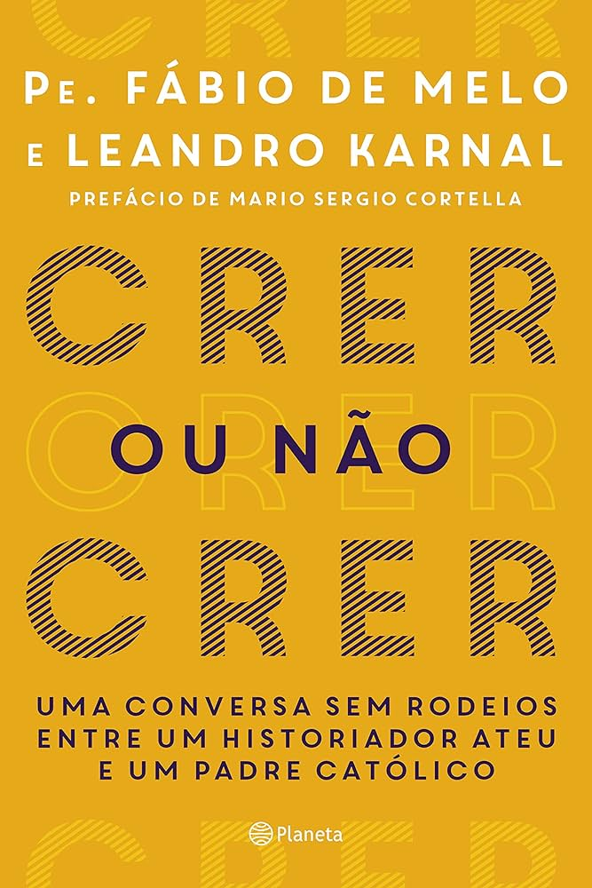

Crer ou Não Crer
Autor: Leandro Karnal
Preço: R$30.00
Descrição: "Crer ou Não Crer" de Leandro Karnal. Em uma conversa franca entre Leandro Karnal e o padre Fábio de Melo, o livro discute temas como fé, religiosidade e filosofia, oferecendo ao leitor diferentes perspectivas sobre a crença e o ceticismo em uma análise aberta e enriquecedora.